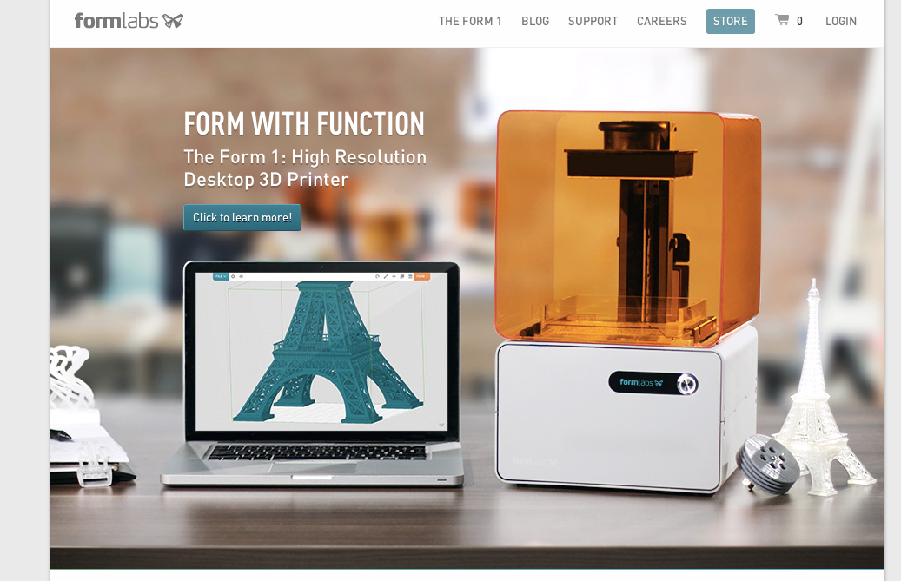
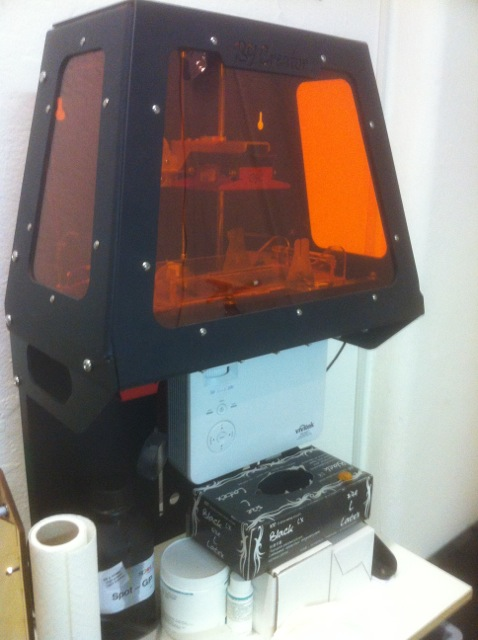

3D-Drucker
ProSeminar Geschichte des Computers
Finn Pauls, FU Berlin, Februar 2014
Was ist ein 3D-Drucker?
Maschine, die drei-dimensionale feste Objekte anhand eines digitalen Modells durch einen ebenenweisen Prozess herstellt.
Verschiedene Verfahren
- Fused Deposition Modeling ("Schmelzschichtung")
- Lichtpolymerisierung
- Stereolithografie
- Digital Light Processing
- Selektives Laserschmelzen (Granular)
Fused Deposition Modeling
Prinzip
Schmelzung eines Kunststoffdrahts und anschließende Kühlung beim Auftragen der Schicht.
Wir haben einen solchen 3D-Drucker hier (Kurze Vorführung).
Stereolithografie
- Entwickelt 1984 von Charles W. Hull bei 3D Systems Inc.
- Erstes funktionierendes 3D-Druck-Verfahren
Stereolithografie
Prinzip
Punktuelle ebenenweise Verfestigung eines lichtaushärtenden flüssigen Kunststoffs mit einem Laser
 Bildquelle
Bildquelle
{kind=link}
Stereolithografie
Hobbyprodukt: Formlabs Form1
Stereolithografie
Video
Digital Light Processing
- Ähnliches Prinzip wie Stereolithografie
- Erhärtung passiert parallel durch ein Beamer-Bild
Digital Light Processing
Hobbyprodukt: B9Creator
Selektives Laserschmelzen
- Ähnlich wie Stereolithografie, aber Granulat wird geschmolzen und erhärtet daraufhin
Selektives "Laser"-Schmelzen
Ungewöhnliches Beispiel
Verbreitete Standards
STL-Format zur Verbreitung von Druckvorlagen
G-Code zur Steuerung des 3D-Druckers
STL-Format
- Ursprünglich von 3D Systems Inc. für ihre STereolithographie-Drucker entwickelt
- Sprache zur Beschreibung von Oberflächen eines 3D-Objektes durch Dreiecke.
solid name
facet normal ni nj nk
outer loop
vertex v1x v1y v1z
vertex v2x v2y v2z
vertex v3x v3y v3z
endloop
endfacet
endsolid name
G-Code
- Ursprünglich für CNC-Maschinen entwickelt
- Sprache zur simplen Übermittlung von Steuerungsbefehlen
G28 X0 Y0 ;move X/Y to min endstops
G28 Z0 ;move Z to min endstops
G1 Z15.0 F40 ;move the platform down 15mm with a speed of 40 mm/s
G1 F200 E3 ;extrude 3mm of feed stock